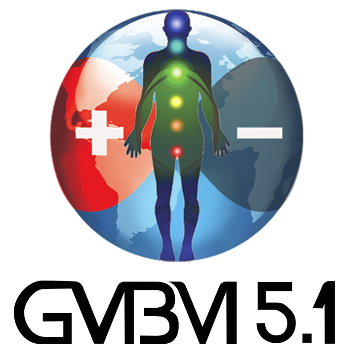
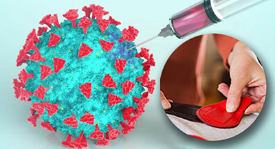

Bienvenido a la
Guía de Biomagnetismo 5.1

Estás en la versión Basic presiona aquí para ir a la versión PRO.


Guía de Biomagnetismo 5.1
La nueva versión Guía Mundial de Biomagnetismo 5.1 presenta un diseño más amigable. Hemos revisado los contenidos y artículos de la guía para seguir ofreciendo la información más confiable y actualizada. Contenidos basados en el sistema desarrollado por el Dr. Isaac Goiz Durán y enriquecido con las aportaciones de varios biomagnetistas alrededor del mundo.
La versión GMBM-5.1 PRO te ofrece el contenido completo de la Guía ya sea de manera Online u Offline y te permite descargar diversos materiales como: listas de patógenos, poster de puntos y las versiones Offline para Window, Android y/o Mac. Para más informes visita nuestra Tienda Online.
Si deseas saber más sobre las herramientas y el uso que te ofrece nuestra GMBM-5.1 visita Uso de la Guía también te invitamos a ver nuestro video introductorio donde presentamos algunas de sus funciones.
Novedades:
Ya está disponible la nueva actualización de la Guía GMBM5.1.
Obten tu membresía en nuestra Tienda en línea y descarga la app en cualquiera de sus tres versiones:
Ahora te presentamos el Poster con 173 puntos disponible al adquirir cualquiera de nuestros paquetes. Para conocer más sobre los nuevos contenidos de la guía visita: lo nuevo.
Finalmente informamos que nuestro nuevo correo de atención a usuarios es atencion.gmbm@gmail.com
Esta guía ha sido creada en reconocimiento al trabajo del Dr. Isaac Goiz Durán, padre del biomagnetismo médico. El "Par Biomagnético" la versión de internet es de acceso libre. La información aquí expuesta y el uso que se de es resposabilidad de cada usuario, Todo el contenido de la presente Guía está protegido por las leyes de derecho de autor. Se recomienda discreción y criterio en su uso. La aplicación del biomagnetismo médico no sustituye los tratamientos médicos ni la intervención de profesional(es) de la salud.


Biomagnetismo y vacunas
Desde principios de año comenzó la vacunación en varios países para combatir la enfermedad de la Covid-19. Actualmente ya son varias vacunas que se están aplicando provenientes de distintos laboratorios y países como Estados Unidos, Alemania, China, Rusia, La India.
En este artículo presentamos los posibles efectos secundarios que puedan causar las vacunas en general y como ayudar a prevenirlos o aminorarlos mediante la aplicación del par biomagnético. (leer más)
Ver video Biomagnetismo y vacunas.